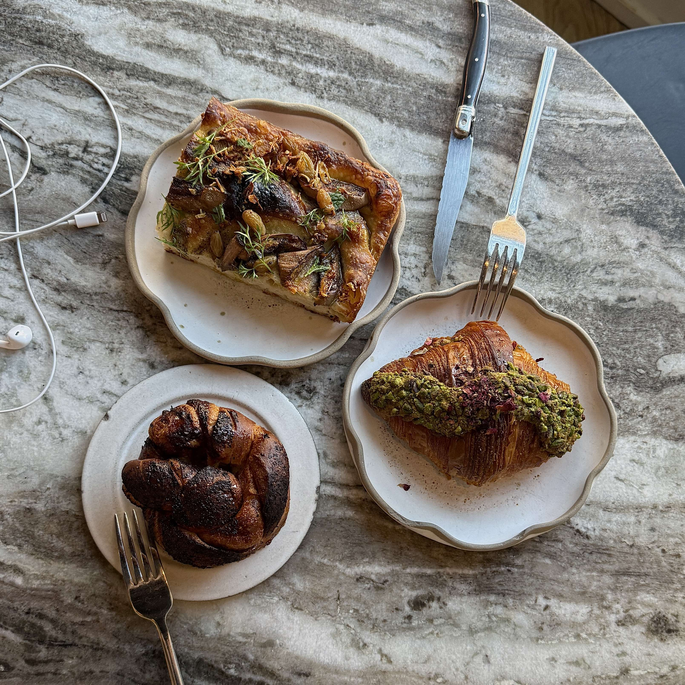

librae Bakery
MENU:
REVIEW:
Oh my god, the pastries here were all incredible. The pistachio rose croissant — their signature — was perfectly sweet with a flaky, buttery, and light texture. It’s honestly one of the best croissants I’ve ever had. The loomi babka reminded me a bit of French toast, with soft, chewy layers and little seeds (I’m guessing loomi) that added a flavor I really loved. The sweetness was perfectly balanced. The seasonal focaccia was amazing too — a more savory option with a soft interior, a crisp, seasoned exterior, and so much flavor. Everything I tried was perfect, and I definitely want to go back to try more of their pastries.
⭐ rate: 10/10